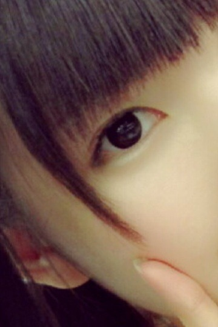

| 2013/07 14 Sun | 生駒の地。秋田の地 。好き。(´>∀<｀)ゝ |
ちはるーむへようこそ＼(^o^)／
やあやあ！
まずは答えからということでーっ？
1位 いこま
2位 ひなちま
3位 若月
4位 真夏
5位 かな
ダントツすぎた...
他の子だけ合わせても10くらいだた...
ちょいと簡単すぎましたわ〜

とゆことはっ？
もちろん
このこですよねー
ばんぼんっ

ほいっ！！
我らが生駒！！！！
生駒といえばー秋田！
とゆことで、秋田の皆さん、お邪魔しました( ´ ▽ ` )ﾉ
秋田に行くのは初めてだったから
行くの決まってからすごい楽しみで
思ってた通り、
秋田すごくいいところで( ´ ▽ ` )ﾉ
ご飯も美味しくて、
人もみんな優しくて、
過ごしやすくて、
最高でした(o>ω<o)
また秋田でLIVEがしたい！！
生駒の地、秋田の地で、
あたしが生駒にイチオシされたからには、
また行くしかない！！笑( ´ ▽ ` )ﾉふふ
秋田のみなさん、
ラジオを聴いてくださったみなさん、
わざわざ遠征してくださった乃木ふぁむのみなさん、
本当にありがとう

充実した２日間を過ごせました！
ありがとう！！！
生駒家も、本当にありがとうございました！
差し入れに歓喜でした。
かき氷、スイカ、さくらんぼ、お寿司...
なんて贅沢な日々...(о´∀`о)
感謝してます！！！
LIVEも素直に楽しかった( ´ ▽ ` )ﾉ
おいシャンのまいやんポジもなかなか嬉しかったし楽しかった( ´ ▽ ` )ﾉ
やっぱりLIVE...だいすきだわ〜(●´-` ●)
そして愛未さん。
ホテルも、バスも、新幹線も、ずーっとお隣さんだったわね。
この2日間。
いい意味で気を遣わない！
なんでも話せる仲！
じょー。
愛未さんお隣で寝てるけども。
寝顔撮ったけども。
さすがに独断と偏見でブログ載せたら
さすがの愛未さんも
激おこスティックファイナリアリティぷんぷんドリームだろうからやめとくわ。笑
(↑あってる？)
よーしっ
summer vacation
最初の思い出！！秋田！！
これからいっぱい増やしていけたらいいなあヾ(*･∀･*)ﾉﾞふふふ
よし。締めくくりは宿題という名のクイズ！！！

わかるかなー？
ばいるんっ
るんるんっ
ちはるんっ
(´>∀<｀)ゝ
コメント(240)
2013/07/14 22:12